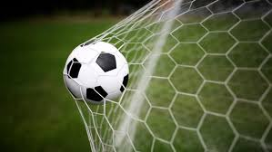
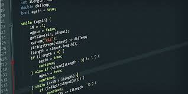

Over mij

- 3 hobby's die ik heb zijn:
- Voetbal  Click hier Voetbal is mijn grootste hobby,tijdens vrije tijd Voetbal ik het liefst bij de sportclub in me buurt.
- Programmeren  Click hier Ik vind Programmeren erg leuk,tijdens mijn studie probeer ik ook zoveel mogelijk erover te leren.
- Gamen
 Click hier
Gamen vind ik ook erg leuk,dit doe ik als ik niks te doen heb en geen zin heb om te voetballen.
Click hier
Gamen vind ik ook erg leuk,dit doe ik als ik niks te doen heb en geen zin heb om te voetballen.